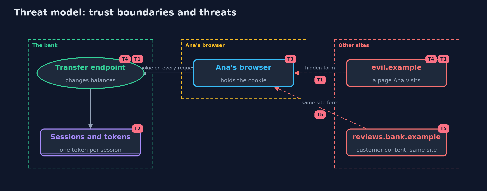

Threat Model — Cross-Site Request Forgery (CSRF) and Its Defences
A threat model answers four questions: what are we protecting, who or what could harm it, how, and what do we do about it. This one covers this project's own demo system, not a production deployment. Domain: an online bank.
Scope
An online bank's cookie-authenticated transfer form and API, used from a browser that also visits other sites. It covers pages on other sites and on same-site subdomains that make the browser send requests. It does not cover cross-site scripting on the bank's own pages, stolen sessions, or the bank's server being compromised.
What we protect (assets)
- Customers' balances and the transfer function.
- Session cookies, and the per-session form tokens.
- API tokens.
Who and what acts on the system
- Ana, a logged-in customer.
- The owner of a page on another site that Ana visits.
- A customer who posts content on reviews.bank.example, a subdomain of the same site.
Trust boundaries
A trust boundary is a line that data or a request crosses between parts that trust each other differently. Threats cluster where those lines are.
- Other sites to Ana's browser: they can make it send requests, not read the answers.
- Ana's browser to the bank: the cookie is attached to every request that goes there.

Each dashed box is a trust boundary. A rose tag such as T1 shows where the threat of that number, in the table below, applies.
Threats, using STRIDE
STRIDE is a checklist of six kinds of threat: Spoofing (S), Tampering (T), Repudiation (R), Information disclosure (I), Denial of service (D), Elevation of privilege (E).
| Id | Kind | Threat | Where it shows up | Control in this project | What is left |
|---|---|---|---|---|---|
| T1 | Spoofing | A page on another site makes Ana's browser send a transfer with her cookie | Bank.transfer |
A per-session form token, SameSite cookies, and Sec-Fetch-Site or Origin checks | A bank page with cross-site scripting can read the token and defeat all of these |
| T2 | Tampering | A token from another session, or a guessed token, is accepted | Bank.transfer token check |
Tokens are random, tied to one session, and compared in constant time | A token leaked in a URL or a log can be replayed until the session ends |
| T3 | Elevation of privilege | An older browser ignores SameSite and sends the cookie on cross-site requests | Browser (legacy) |
Tokens and Origin checks do not depend on the browser enforcing SameSite | Without the token, an old browser with no Origin header is unprotected |
| T4 | Tampering | A link moves money because the bank changes state on GET | Bank.transfer with GET |
Transfers need POST; GET is refused with 405 | Any other endpoint that changes state on GET reopens the hole |
| T5 | Spoofing | A page on a same-site subdomain sends a request that SameSite allows | Site.sameSite, Browser |
Tokens and a same-origin Sec-Fetch-Site rule refuse it | User content on subdomains of the bank's site should be avoided or isolated on another site |
Assumptions
- The bank's pages have no cross-site scripting, which would let a script read the token.
- The browser enforces the same-origin policy and, when modern, SameSite and Fetch Metadata.
- In the demo, sites are logical names on one local server, and passwords are demo values.
Out of scope
- Cross-site scripting: the cross-site-scripting project.
- Session theft and fixation: the session-management project.
- Login CSRF and clickjacking, which need their own controls.
How the tests check this
BankTestchecks tokens, Fetch Metadata and Origin decisions, GET refusals, transfer validation and the API, with hand-made requests.BrowserTestchecks the browser model's SameSite rules, legacy behaviour, headers and tokens against the real local server.SiteTestchecks origins, sites and Sec-Fetch-Site values.DemoRunsTestcompares the whole demo with the golden output.
Where this model goes next
The next project, server-side-request-forgery, turns the direction around: instead of another site making the browser send requests, a customer makes the server send them.